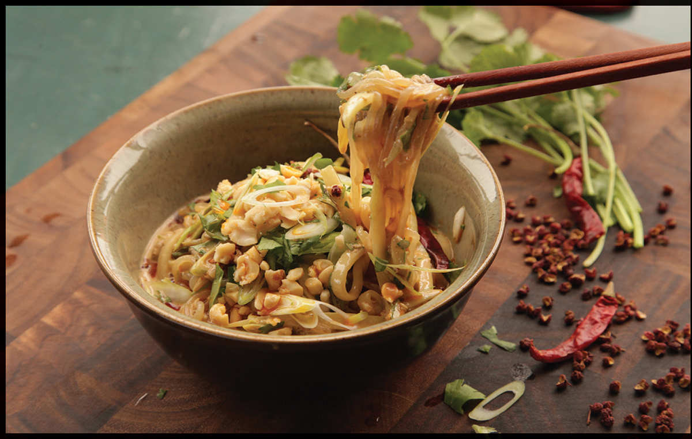

SPICY SHIRATAKI AND CUCUMBER SALAD
|
Yield Serves 2 as an appetizer |
Active Time 15 minutes Total Time 15 minutes |
For the best results, use homemade Málà Chile Oil (here). If using an American cucumber, peel and seed it before cutting into matchsticks.
INGREDIENTS
One 8-ounce package shirataki noodles
¼ cup (60 ml) homemade or store-bought Sichuan chile oil with its sediment (see Notes)
1 medium garlic clove, minced (about 4 g/1 teaspoon)
2 tablespoons (30 ml) Chinese sesame paste, store-bought or homemade (here), or 4 teaspoons (20 ml) tahini mixed with 2 teaspoons (10 ml) roasted sesame oil
1 tablespoon (15 ml) light soy sauce or shoyu
1 tablespoon (15 ml) Chinkiang or balsamic vinegar
2 teaspoons (8 g) sugar
½ large American or English cucumber or 1 Japanese or Persian cucumber (about 4 ounces/120 g), cut into fine matchsticks (see Notes)
¼ cup thinly sliced scallions, white and pale green parts only
Small handful chopped fresh cilantro leaves and tender stems
Big pinch of toasted sesame seeds
¼ cup (40 g) roasted peanuts or Fried Peanuts (here), gently crushed in a mortar and pestle
DIRECTIONS
1 Pour the shirataki noodles into a colander or strainer. Rinse under cold running water for 30 seconds, then set over a bowl to drain while you make the sauce.
2 Combine the chile oil, garlic, sesame paste, soy sauce, vinegar, and sugar in a large bowl and stir with a spoon to combine. Add the cucumbers, scallions, cilantro, sesame seeds, and drained noodles. Toss to coat, adjusting the seasoning with more chile oil, sesame paste, sugar, soy sauce, or vinegar to taste. Transfer to a serving platter, top with peanuts, and serve.
